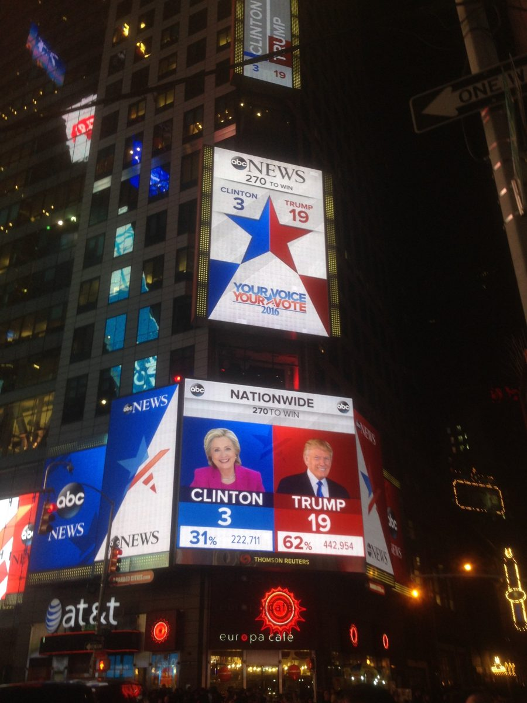
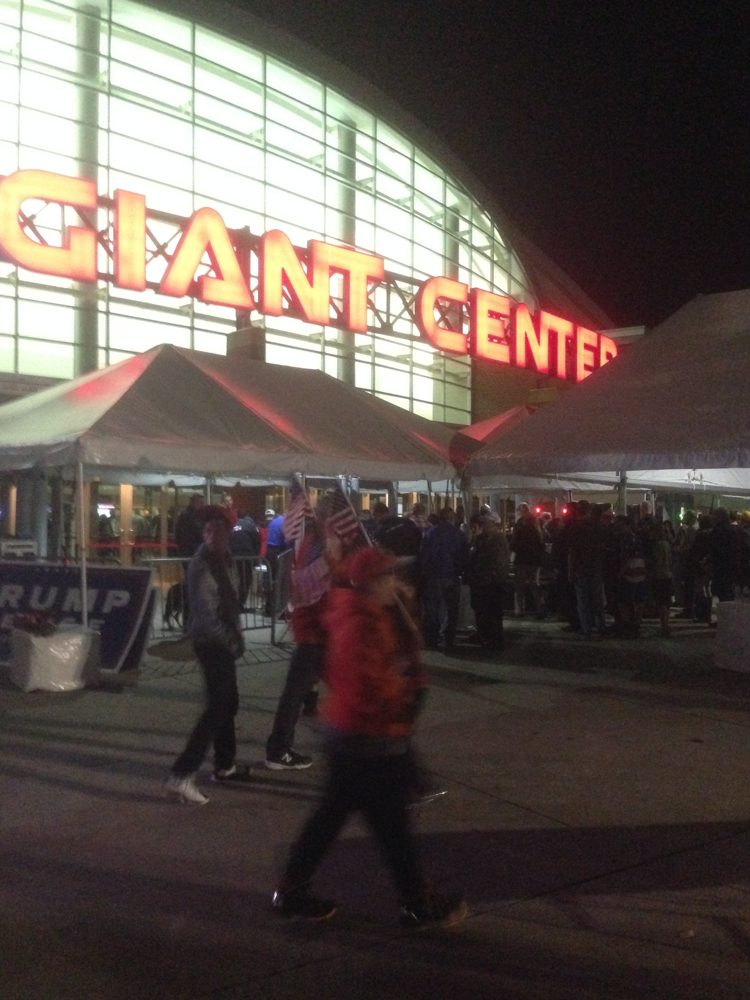
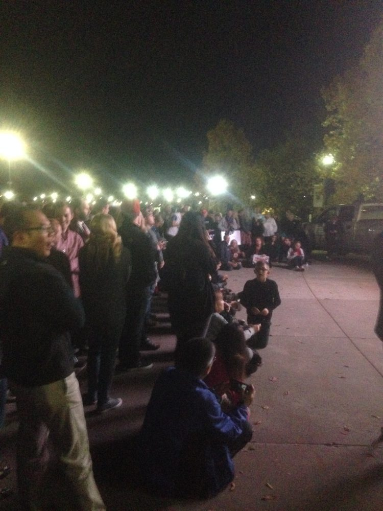
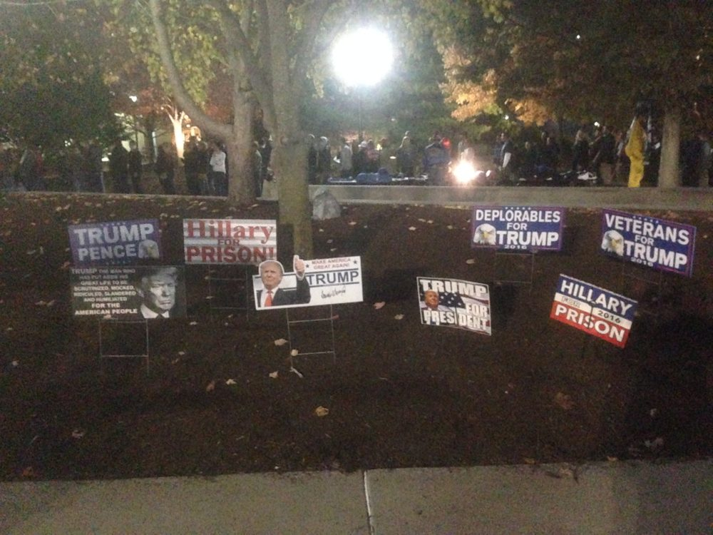

Ten years ago this week I was in Washington editing a documentary as America came to terms with the result of the 2016 Presidential election — now I’m in New York as America is processing the result of last week’s mid-term election tsunami by the Democrats. In 2016, there was a palpable sense of shock, as polls had not predicted the outcome of a win by Donald Trump. Ten years on the polls had been predicting that the Democrats would do well, due to the unpopularity of the Iran war and its impact on inflation. Even so, there was still some shock at the scale of the Democrat wins — especially the loss of Texas.
My impression in 2016 was tempered by the recent outcome of the Brexit referendum in the UK, which caught a mood of popular disenchantment with the status quo — when I vox popped people who streamed into a Donald Trump rally in Hershey, Pennsylvania, I heard similar complaints about the establishment. Ten years on, that capacity of Trump to harness that protest vote, a capacity he demonstrated again in 2024 when he defeated Kamala Harris, has been eroded by his decision to go to war and the consequences of that war on the domestic economy. As a visitor from the UK to America, the high cost of living is particularly striking today — and Trump’s handling of the economy is one of the voters’ main concerns.



The briefing that is on this page looks at pollsters, papers and podcasts to take the temperature of America at election time — and since last week, that is in effect taking the temperature of the potential race to the 2028 election. The race starts with a shock of sorts, that voters could turn so decisively against Republican candidates. It’s a very different shock to that which could be felt in November 2016 which has reverberated for the last ten years — and part of the process going on today is assessing whether that reverberation has now ended or not.